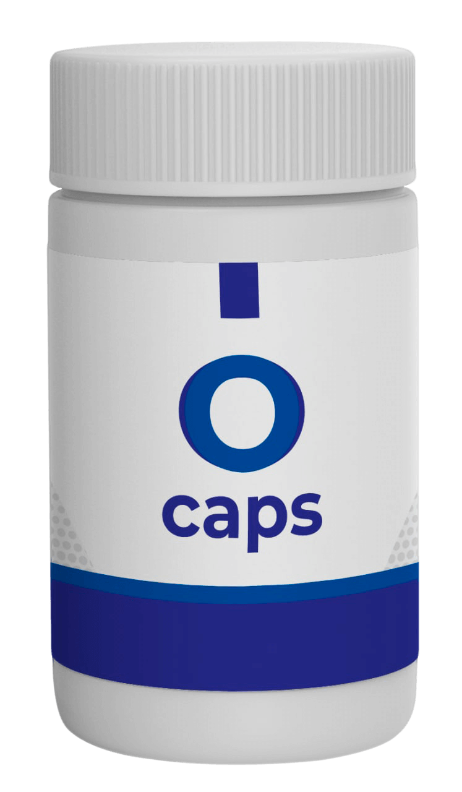

38 éves vagyok és szemüveget hordtam egész életemben. Az egyetem előtt a látásom -2,00 volt mindkét szememre. Elkezdtem szemüveget hordani, és azóta szinte mindig az orromon ragadt. Később, elkezdtem kontaktlencsét hordani. .
Könyvelőként kaptam munkát, és a látásom még rosszabb lett. A látásom -3,00-ra csökkent. Néha szemüveget hordtam, néha pedig kontaktlencsére cseréltem. Ez egy ördögi kör volt. A szemüvegtől fájt az orrnyergem, és a különféle tárgyakra való fókuszálástól megszédültem. A kontaktlencséktől könnyezett a szemem, és mindezek tetejébe még kötőhártya-gyulladásom lett. Annyira elegem lett, hogy úgy döntöttem, kés alá fekszem.
Gondolkodtam azon, hogy szemműtétre megyek, de folyton halogattam, mert túlságosan féltem. A félelem megbénított, és nem tudtam, mit tegyek. A barátaim és a kollégáim folyton azt mondogatták, hogy ez rossz ötlet. De végül volt megoldás arra, hogy a látásom műtét nélkül álljon helyre. De valamiért nem akartam hallgatni rájuk. Azt gondoltam, hogy ez nem is történik meg. Azt mondták, hogy 12-17 nap alatt drámaian javítható a látás. Akkoriban nem hallgattam rájuk.
Egy nap egy csésze tea mellett ültem az ebédszünetben. Hallottam, hogy a kollégáim arról beszélgetnek, hogyan tudták helyreállítani a látásukat anélkül, hogy kés alá feküdtek volna. Rájöttem, hogy annyira megszállottja voltam a közelgő műtétemnek, hogy észre sem vettem, hogy egyikük sem hord már szemüveget.
És íme, hogyan csinálták. Egy hónappal azelőtt az online boltokat böngészve találták meg az O caps kapszulát. Ezt a terméket nagyon sok blogger ajánlotta. Miután elolvasták a véleményeket, fogták magukat és megrendelték. A termék gyorsan megérkezett és utánvéttel fizettek érte. Az eredmények hihetetlenek voltak: Barbara látása -2,50-ről 1,00-ra javult, Alíz látása +1,50-ről 1,00-ra, Abigélé pedig -4,00-ról -1,00 dioptriára. És ezeket az eredményeket mindössze 15 nap alatt érték el ezeknek a kapszuláknak köszönhetően.
Összeszorítottam a fogaimat, és azt gondoltam, hogy tulajdonképpen nincs vesztenivalóm, ezért úgy döntöttem, hogy én is kipróbálom. Leadtam a rendelésemet, és hamarosan a kapszulák meg is érkeztek postán .
Úgy néz ki, mint egy közönséges kapszula. A készítmény használata nagyon egyszerű. Mindössze annyit kell tennünk, hogy minden második nap egy pohár vízzel bevesszük. Egyáltalán nem időigényes és jó és nyugtató érzés. A termékhez lépésről lépésre útmutató tartozik, amely elmagyarázza, hogy mit kell tenned, hogy helyreállítsuk a látásunkat.
Elkezdtem minden nap szedni a kapszulát. Minden egyszerű volt, és csupán 15 percet vett igénybe naponta. Körülbelül 2 hétig szedtem minden nap...
Aztán elmentem a szememet ellenőriztetni és teljesen megdöbbentem. ...
A látásom -3.00-ról -1.00-ra javult! Egy héttel később 0,7 dioptriát! Nagyon boldog voltam. -3,00-ról 0,7 dioptriára javultam mindössze 3 hét alatt! El tudjátok ezt hinni? MINDÖSSZE 3 HÉT ALATT! Még mindig sokkol, hogy most már mindent tisztán látok, mindenféle elvakítás vagy homályosodás nélkül.

Eközben az egészségügyi rendszer folyamatosan átver minket, műtéteket, szemüvegeket és kontaktlencséket fizettet velünk... Miért nem javasolta a szemorvosom, hogy szedjem ezeket a kapszulákat? Könnyű megmagyarázni: fél, hogy elveszíti a pácienseit!
Itt van a weboldal, ahol megrendeltem a kapszulákat. Ez az egyetlen cég, amely hivatalosan engedélyezte az értékesítését. Az ára 3 csomag kontaktlencsének vagy 4 mozijegynek felel meg. Döntsd el te magad, hogy ez sok pénz-e vagy sem, tekintve, hogy a szemüveg és a kontaktlencse mennyire haszontalan.
Remélem, hogy a történetem neked is segíteni fog, és végre helyreállíthatod a látásodat. Ha valaki már alkalmazta ezt a módszert, ossza meg véleményét az alábbi hozzászólásokban.